邝美云是虔诚
蔡依林（JOLIN）表示，要保持肌肤清透水嫩，首先应当从

亚洲最性感素食女艺人冠军。（2008年）来自“善待动物组织亚太分部”网站的消息，已淡出歌坛多年的女歌手王菲，被爱护动物的人士选为亚洲最性感的吃素女人。经纪人邱瓈宽听闻王菲“吃素”也能获奖，笑了笑说：“她大约吃素快2年吧，是吃锅边素，方便为主。”并透露周边很多朋友也都相互影响跟进，但王菲老公李亚鹏并没有吃素。邱瓈宽补充说：“王菲一直以来都是很慈悲、有怜悯之心的好女人，做了很多善事没有公布。”
赵薇赵薇宣布成为严格素食者，希望不再有灾难来临。
问：发现你瘦了好多，是因为吃素吗？为什么想开始吃素呢？
答：主要之前一直在拍戏，比较辛苦。但是和吃素也有关系吧。从今年开始，我开始慢慢地吃素，一开始吃锅边素，也就是配菜，比如蒜薹炒肉丝，我吃那个蒜薹。
但是最近开始吃纯素了。从我在电视上看到地震的画面那一刻开始，我就发了一个愿：我从这一日开始吃纯素，希望这个世界不再有灾难来临，希望那些受伤受苦的人们能看到希望。虽然这只是我自己的事，但是我相信这样做会有意义：因为所有的祈福，都是从自己的心灵开始，从约束自身开始。我们应该节制自己过多的欲望，当然也是为了健康，身体和心灵上的。
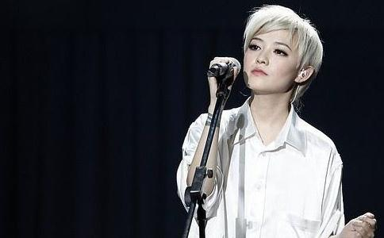
范晓萱问：为什么把自己的厂牌叫吃草的鱼呢？
范晓萱：因为我吃素啊，又是双鱼座，开始是想叫吃素的鱼，但是一想，实在太难听，就改了。
林忆莲歌手林忆莲虽然当了妈妈，但身材仍不走样，有什么独门绝招呢？原来她吃素。吃素好处很多，不仅可以清瘦一下，还可以彻底改变体质，连带皮肤也可以变好。这样大约7个月瘦了5公斤。吃素减肥虽然要有足够的耐心，但这种慢慢消瘦的方法绝对比快速减肥舒服、健康。
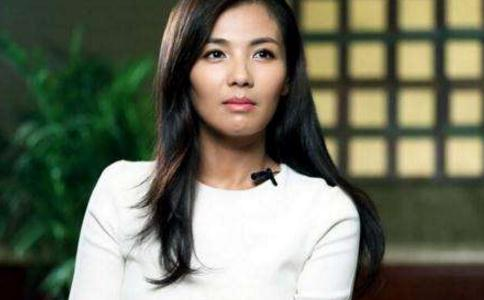
刘涛 刘涛说：“我这个素食主义者，首先不是考虑营养，并不是考虑吃素会对自己身体有什么好处，而是不想伤害其它的动物。因为在这个世界上，除了人类以外的其它动物，它们也是有血有肉的，他们也会疼，会
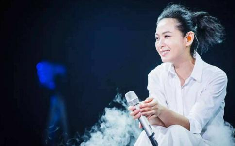
刘若英刘若英吃素好长时间了。滚石宣传人员透露，刘若英吃素已经有好长一段时间了，有时候大伙儿上麦当劳吃东西，刘若英就只能吃薯条，其余的汉堡炸鸡都让宣传人员吃光了。不过刘若英也有特别喜欢吃的东西，那就是素的匹萨和火锅，宣传人员说：“每次我们到高雄宣传时，一定会去火锅店吃火锅，只有一小时空档也不错过。”
徐熙媛几年前，徐熙媛（大S）养的狗气管收缩，差点死掉，大S难过得决定吃素一年，希望能帮助狗好起来。她说：“我从前很爱吃肉，是美食主义者。现在觉得吃素是对的，因为其他动物像我的狗一样有生命，而生命都是重要的，因此我决定吃素。”
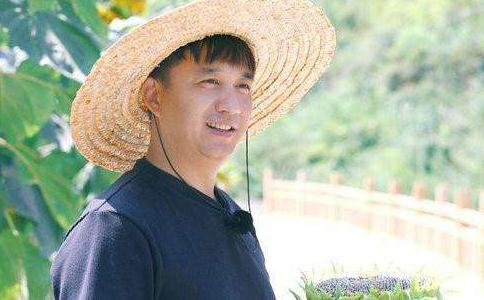
黄磊网友：黄磊，听说你突然就吃素了，为什么？你信佛吗？你比较喜欢什么样的人？
黄磊：我是因为这样比较健康，就是比较热爱动物，不
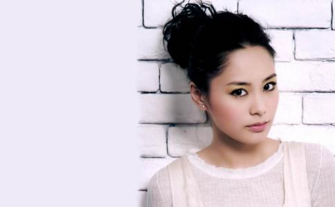
钟欣潼（阿娇）为悼念爷爷而吃素。钟欣桐（阿娇）的爷爷两年前过世，为了爷爷她开始吃素，更有意吃长斋，原因是内疚之前没时间拜爷爷。
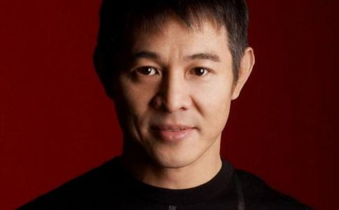
李连杰 平民饮食素食功夫皇帝，因为不吃荤，鲜菇炒花椰菜、
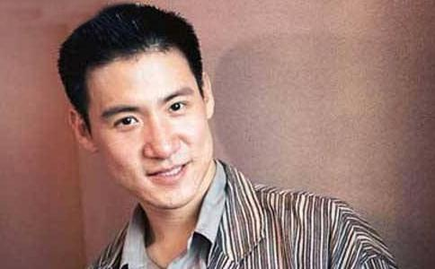
张学友 张学友吃素吃上瘾，对山珍海味毫不垂涎，打算长期茹素让身体继续环保，而唱片公司的同事们原本以为张学友吃素是因为与
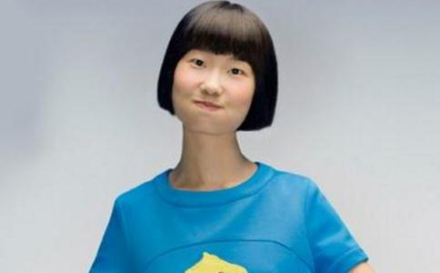
龙宽 龙宽筹建素食俱乐部。现在演艺圈内吃素的人士不少，但龙宽说：“演艺圈里大部分人都是因为健康、瘦身、
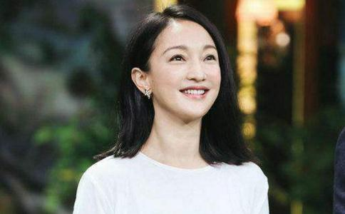
周迅建议一周吃一顿素。4月21日，联合国开发计划署中国亲善大使周迅任命仪式在北京举行，“环保先锋”成了周迅的新身份。周迅曾看过美国前副总统戈尔投资拍摄的纪录片《难以忽视的真相》，被片中的内容深深震动。周迅称：“牛羊这些食草动物在反刍、打嗝、放屁的时候都会产生大量的二氧化碳。虽然听起来很荒诞，但是真的有科学根据。据估算，从饲养家畜到家畜被摆上餐桌这一过程中，所排放的二氧化碳占全球总排放量的近四分之一。所以很多绿色组织都鼓励人们少食用红肉。我现在基本上是吃素的，比较少吃肉，我觉得大家可以试著一周吃一顿素食。”
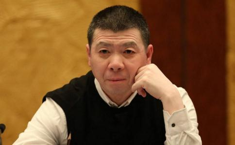
冯小刚徐帆夫妇吃素。至于冯小刚到底最爱吃她做的什么菜，徐帆则出人意料地透露：“他是吃素的人。”有媒体猜测冯小刚是否由于身体原因吃素，不过徐帆对此否认，她称冯小刚吃素仅仅是因为习惯。
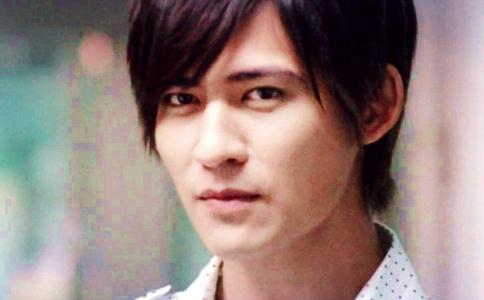
周渝民跟著大S吃素。大S求男友周渝民跟随自己吃素，后来，周渝民也吃起素来，体重也开始下降，但再没有暴肥的情况出现。早前，周渝民开始去健身，前前后后瘦了近20磅左右。
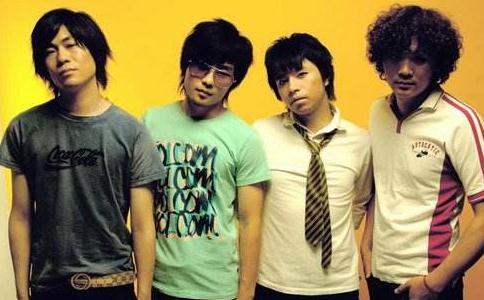
“优质为素食高歌。截至目前，北京的“优质大豆”摇滚乐队，已经偕天堂、SULUMI、山人、意外惊喜等其他摇滚乐队，在北京、上海、广州等城市举办了13场“别吃朋友”倡导素食主题公益演出。“优质大豆”主唱解征告诉记者：“我从2001年开始吃素，主要原因是动物是我们的朋友，我不忍心杀害它们。同时也为对抗全球暖化的危机。”
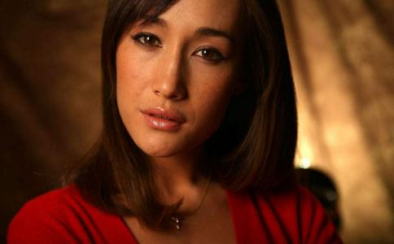
李美琪MaggieQ早在七、八年前开始食素。问到她为何会选择素食？MaggieQ指同情心是一件很重要的事，由于动物不懂得说出自己的处境，她希望自己可以代它们讲出心声，所以便决定素食。说到两款海报颇为性感，MaggieQ表示希望用极端的手法引起大家对素食的注意。
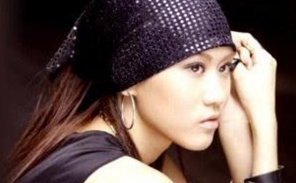
陈嘉唯 台湾乐坛2003年新人，18岁的陈嘉唯，是个「反差」很大的歌手，她吃素、她念
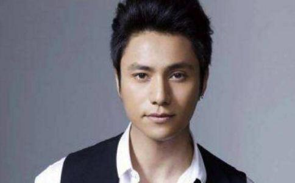
陈坤陈坤喜欢吃素菜。两位女影迷之一的陈小姐得意地说：“你们不知道吧？陈坤是信佛的，他从上大学时就开始吃素了，当艺人之后更是沿袭了这一饮食习惯。
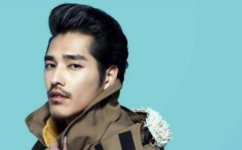
蓝正龙蓝正龙吃素受生命阶级论感召。某晚，他和恩师王小棣、导演王明台、经纪人邬裕康、比利等，到南京东路上的“众流素食”聚餐，和大S交往时，就常被媒体拍到两人一起去吃素，分手后的生日他仍坚守此道，比利为他解释：他吃素吃四年了，吃的是奶蛋素，他很久之前看完《生命阶级论》后下的决心，只是他一直不解释。
吃素的根本原因，是慈悲、是爱心、是尊重一切生命。
在世界各地，每天，都有人因为慈悲和爱心，不忍吃动物的肉；每天，都有动物保护组织，呼吁戒杀、食素，唤醒人类的良知，呼唤世界和平……可怕的“精养”：请到当地猪场、鸡场、鸭场、牛场、渔场实地调查，动物每天吃的什么药！